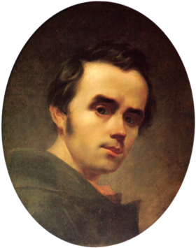
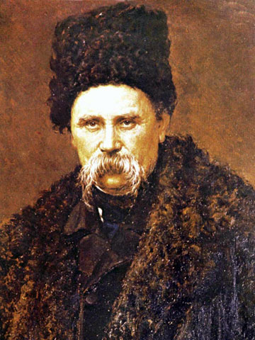
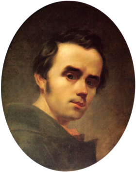
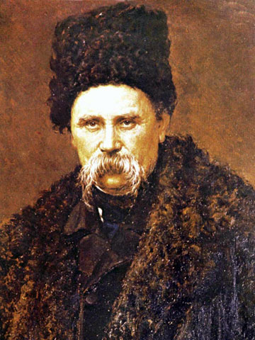

(25 лютого (9 березня) 1814 - 26 лютого (10 березня) 1861 року).
Видатний український поет, художник, громадський діяч, перекладач, автор "Кобзаря", співробітник Київської
Археологічної комісії, академік гравірування (1860)
 



Тарас Шевченко - видатний український поет, прозаїк, драматург, художник, політичний і громадський
діяч. Він був
людиною універсальних обдарувань та інтересів. Все його життя і творчість були присвячені українському народу. Поет
мріяв про ті часи, коли його країна буде незалежною суверенною державою, коли в Україні шануватимуться мова,
культура та історія народу, а люди будуть щасливими.
Народився в сім'ї селянина 25 лютого (9 березня за новим стилем) 1814 року в селі Моринці на
Черкащині. Рано
залишився сиротою. Грамоти навчився у дяка. У 14 років його взяли "козачком" до двору поміщика П.Енгельгарда, з яким
переїхав спочатку до Вільно, а потім - до Петербурга. У 1832 р. Шевченка віддали "у науку" до художника В.Ширяєва. У
1838 році за пiдтримки К. Брюллова, В. Жуковського, О. Венеціанова, М. Вєльгорського, Є. Гребінки, І. Сошенка та
інших Шевченка викупили з кріпацтва.
Т. Шевченко є одним з найвидатніших майстрів українського образотворчого мистецтва. Він працював у
галузях
станкового живопису, графіки, монументально-декоративного розпису та скульптури, досконало володів технікою
акварелі, олії, офорту, малюнка олівцем і пером. Він є автором понад тисячі мистецьких творів (втрачено бiльше 160).
У 1859-1860 роках виконав офорти з творів зарубіжних та російських художників, за які отримав звання академіка
гравірування.
10 березня 1861 року о 5 годині 30 хвилин ранку помер Тарас Григорович Шевченко. Над
домовиною Шевченка в Академії
мистецтв виголошено промови українською, російською та польською мовами. Поховали поета спочатку на Смоленському
кладовищі в Петербурзі. 26 квітня 1861 року домовину із тілом поета поїздом повезли до Москви. На Україну труну
везли кіньми. До Києва прах Шевченка привезли 6 травня увечері, а наступного дня його перенесли на пароплав
"Кременчуг". 8 травня пароплав прибув до Канева, й тут, на Чернечій (тепер Тарасова) горі,
поета поховали. Над ним
насипали високу могилу, вона стала священним місцем для українського та інших народів світу.